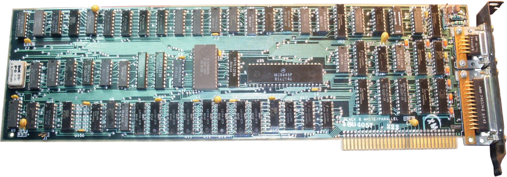

- CUPRINS:
- - Definiţie
- - Prezentare generală
- - VRAM (Video RAM)
- - Istorie
Definiţie
GPU-ul, cunoscut ca şi placa video, placă grafică sau Unitate de Procesare Grafică, este similar cu microprocesorul şi este specific proiectat pentru a realiza calcule matematice şi geometrice complexe, care sunt necesare pentru randări grafice. Unele din cele mai rapide plăci video au mai multi tranzistori faţă de microprocesoare.
Prezentare generală
Imaginea din dreapta este un exemplu de placă video. Aceasta se plasează într-un loc special, ce se gaseşte pe placa de baza. Placa grafică produce o cantitate mare de caldură, astfel ele sunt acoperite de un radiator şi un ventilator.

VRAM (Video RAM)
Placa video crează imagini, astfel are nevoie să stocheze undeva informaţiile şi imaginile complete. Aşadar, acesta se foloseşte propria sa memorie RAM, numită VRAM. Această memorie stochează informaţii despre fiecare pixel, culoarea lui, locaţia lui pe ecran. O parte din RAM poate acţiona ca frame buffer, asta însemnand ca păstrează imagini completate până cand este timpul de a le afişa. Acest tip de memorie lucrează la viteze foarte mari şi este dual ported, însemnând ca sistemul este capabil de a citi din VRAM şi de a scrie din acesta, în acelaşi timp.
VRAM este conectat direct la un digital-to-analog converter, numit DAC. Acest convertor se mai numeşte RAMDAC, şi are rolul de a converti o imagine într-un semnal analogic pe care monitorul îl poate folosi. Unele placi video au mai multe RAMDAC-uri, ceea ce duce o la performanta mai mare si la capacitatea de a suporta mai multe monitoare.
Istorie
Prima placa video a fost produsa de IBM in 1981. Aceasta a fost numita Monochrome Display Adapter (MDA), si putea sa afiseze pe 25 randuri cu 80 de coloane caractere si simboluri cu rezolutie mare in verde sau alb pe un ecran negru.
IBM Monochrome Display (MDA)
